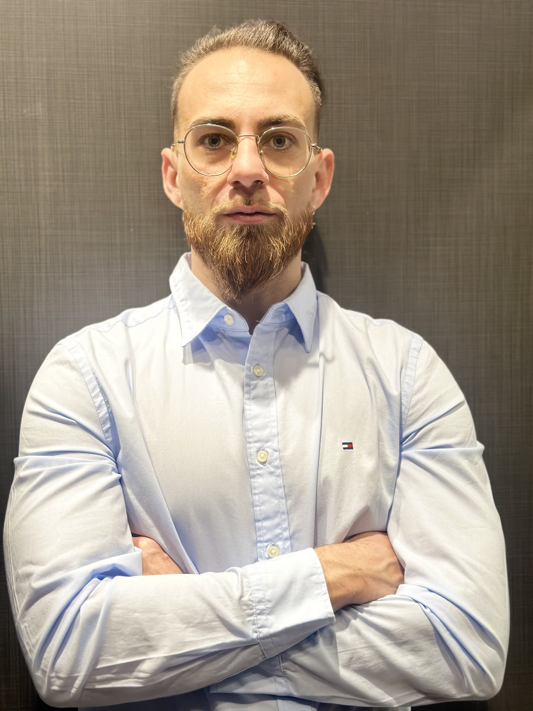

Samuel Fuertes Salas
Especialista en Ciberseguridad | Backend Developer
Desarrollador Backend con fuerte enfoque en Ciberseguridad Defensiva. Especializado en la optimización de infraestructuras críticas y el endurecimiento (hardening) de CMS como WordPress y Drupal. Mi metodología se basa en el Bootstrapping: soluciones robustas, seguras y de alto rendimiento con el mínimo consumo de recursos.

Proyectos Principales

RastroZero - Micro-SaaS de Privacidad
Desarrollo íntegro de una plataforma de auditoría técnica y eliminación de contenido sensible. Implementé un motor de búsqueda y generación de informes legales (DMCA) automatizando flujos que reducen el tiempo de gestión manual en un 90%.

Seguridad y Desarrollo en Infraestructura Crítica (AST)
Responsable técnico del mantenimiento y endurecimiento del portal corporativo. Ejecución de políticas de seguridad en entornos Drupal 7/11, optimización de rendimiento (PageSpeed 100/100) y desarrollo de módulos personalizados en PHP.

Auditoría Técnica y Gestión de Incidentes
Especialista en reconocimiento pasivo (OSINT) y mitigación de fugas de información. Experiencia real en rastreo de identidades tras proxies (Cloudflare) y ejecución de escaladas legales ante proveedores internacionales (ICO UK, KNOWNSRV).
Habilidades Técnicas
Ciberseguridad
- Hardening WP/Drupal
- Reconocimiento OSINT
- Mitigación Fingerprinting
- Cumplimiento GDPR/DMCA
Backend & Scripting
- Python (Flask)
- PHP (Módulos/Filtros)
- Playwright Automation
- SQLAlchemy / MariaDB
Ciberseguridad
- Kali Linux
- Wireshark
- Volatility / FTK
- Bash Scripting
Herramientas & B.D
- VS Code & VS Studio
- Git & GitHub
- Docker Desktop
- MySQL & MariaDB & MongoDB & SQLite
Soft Skills
- Adaptabilidad
- Trabajo en equipo
- Resolición de problemas
- Entornos exigentes
Trayectoria Profesional
Especialista en Hardening y Seguridad Web | Proyectos Independientes
- Auditoría de Información: Identificación de vulnerabilidades de divulgación (Information Disclosure) y bloqueo de enumeración de usuarios vía API REST.
- Hardening de Servidores: Configuración de entornos Plesk/LiteSpeed para ocultar versiones tecnológicas y unificar mensajes de error de login.
- Arquitectura Micro-SaaS: Diseño de sistemas optimizados para entornos de bajos recursos (2GB RAM) con Docker.
Web Developer / Backend | Aragonesa de Servicios Telemáticos (AST)
- Infraestructura Crítica: Mantenimiento y evolución de sitios gubernamentales bajo Drupal 7 y 11.
- Desarrollo PHP: Creación de funcionalidades personalizadas y gestión de seguridad en formularios corporativos (Webform).
Resolución de Incidentes y Operativa Logística
Logro clave: Resolución de fallos críticos en sistemas industriales (PPG Mercadona) y gestión de recursos en entornos de alta presión (Festivales Nacionales).